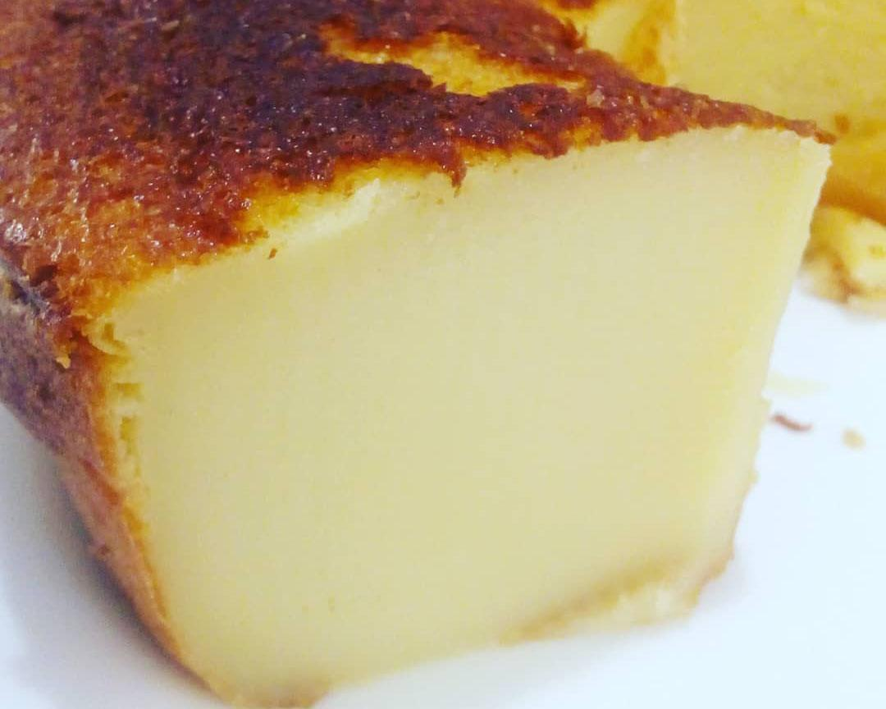

Milk Cake Recipe
Lemon Pie Recipe

Image Source: deskgram.net
This cake is a Brazillian recipe which has different names across the country. It's a cake made with milk, but with a creamy and consistent texture, that remembers a French Flan, but, it's a cake. In some regions, Brazillians call this cake as "catch husband", in a literal translation.
Ingredients:
- White Sugar: 1 cup
- Flour: 1+1/2 cups
- Milk: 1 Liter
- Milk Powder: 4 tablespoons
- Condensed Milk: 1 can
- Butter: 3 tablespoons
- Vanilla Extract: 1 tablespoon
Preparation Steps:
- Preheat the oven to 180ºC and in a bowl mix the dry ingredients: the wheat flour, the sugar and the powdered milk.
- In a blender, combine the remaining ingredients: the milk, the condensed milk, the eggs, the butter or margarine, and the vanilla extract.
- Once the ingredients in the blender are well mixed, add the dry ingredients (flour, sugar, and powdered milk) and blend for another minute, or until everything is very well combined.
- Grease and flour a bundt cake pan and pour the cake batter into it - the batter will be quite runny, as this is a soft and creamy cake, similar to a pudding. Bake in a preheated oven at 180ºC (350ºF) for 50-60 minutes.
- Wait for the milky cake to cool completely before unmolding. Unmold and serve at room temperature or chilled; it's delicious either way!
Recipe Source: TudoReceitas: Recipe of Milk Cake with Powder Milk